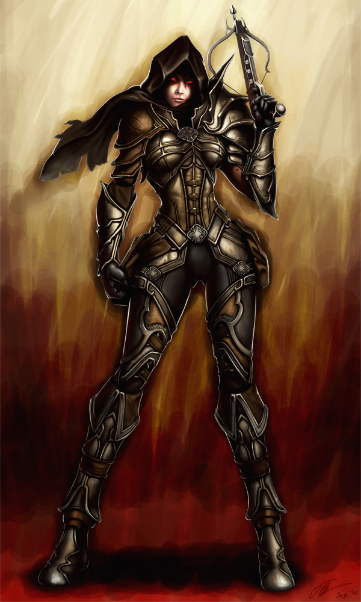

Diablo III
Demon hunter
Level 70
Demon hunters are relentless vigilantes who execute their infernal targets with an arsenal of ranged weapons. They crouch and take aim far from danger, relying on bows, deadly traps, and projectiles to swiftly bring an end to the creatures that haunt their world.
With sweeping blasts of shot, wide salvos of arrows and timed explosives at their disposal, demon hunters excel at devastating groups of foes who cluster together. Hunters’ pinpoint accuracy also allows them to deal with stronger monsters at a distance: they can snipe at key targets or fall back while snapping off kill shots at advancing foes.
However, demon hunters’ focus on ranged combat and limited melee-weapons training leave them in danger when they’re cornered or surrounded. Evasive skills like defensive rolls and jumps, as well as targeted attacks that hamstring and slow enemies, are as crucial to survival as any arrow in a hunter’s quiver.

World of warcraft
Hunter
Level 90
Hunters battle their foes at a distance, commanding their pets to attack while they nock their arrows and fire their guns.
Though their missile weapons are effective at short and long ranges, hunters are also highly mobile.
They can evade or restrain their foes to control the arena of battle.